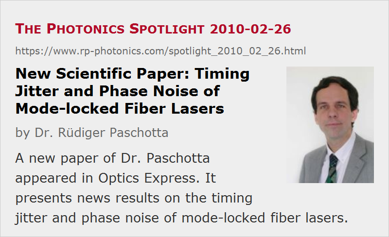

New Scientific Paper: Timing Jitter and Phase Noise of Mode-locked Fiber Lasers
Posted on 2010-02-26 as a part of the Photonics Spotlight (available as e-mail newsletter!)
Permanent link: https://www.rp-photonics.com/spotlight_2010_02_26.html
Author: Dr. Rüdiger Paschotta, RP Photonics Consulting GmbH
Abstract: A new paper of Dr. Paschotta appeared in Optics Express. It presents news results on the timing jitter and phase noise of mode-locked fiber lasers.
Ref.: R. Paschotta, “Timing jitter and phase noise of mode-locked fiber lasers”, Opt. Express 18 (5), 5041 (2010)
(See also: The Photonics Spotlight 2009-08-22)

My latest scientific paper just appeared in the open-access journal Optics Express. I believe that this work will get a lot of attention, as it significantly expands the knowledge on the noise properties of mode-locked fiber lasers.
The noise performance of simple soliton mode-locked fiber lasers has been well understood for many years already; it has been investigated in 1993 (H. A. Haus and A. Mecozzi, “Noise of mode-locked lasers”, IEEE J. Quantum Electron. 29 (3), 983 (1993)), using soliton perturbation theory. Unfortunately, soliton fiber lasers have a fairly limited pulse energy, and mainly for that reason their quantum-noise limited timing jitter is much higher than for bulk lasers, for example. The achievable performance is still quite good, but clearly not the last word.
In recent years, several schemes for mode-locked fiber lasers with substantially higher pulse energies have been developed – most notably, stretched-pulse lasers and wavebreaking-free lasers, the latter often realized with all-normal chromatic dispersion in the resonator. The Haus/Mecozzi analysis is clearly not applicable here, as the assumptions of soliton perturbation theory are not fulfilled. I myself have developed a much more general theoretical treatment (R. Paschotta, Appl. Phys. B 79, 163 (2004), doi:10.1007/s00340-004-1548-9), which can be applied to various mode-locked lasers including most bulk lasers. Still, for the fairly complicated pulse-forming mechanisms in the stretched-pulse and wavebreaking-free fiber lasers, it was not clear whether the application of these results would be valid. Therefore, I decided to investigate several cases using a numerical model as described in R. Paschotta, Appl. Phys. B 79, 153 (2004), doi:10.1007/s00340-004-1547-x. The main results are:
- For stretched-pulse lasers, the timing jitter is only slightly higher than estimated from the equations of the simple analytical model when inserting the minimum pulse duration. (In such lasers, the pulse duration varies substantially in each resonator round-trip.) There is no evidence for any excess noise, resulting from the strong pulse breathing. At least, this holds for the investigated cases. It is not excluded that excess noise arises when one optimizes such lasers for highest pulse energies, penetrating an operating regime which is no longer described with the simple pulse breathing model.
- Wavebreaking-free fiber lasers can exhibit substantial excess noise, apparently arising from the strong nonlinear interaction. This has already been found in a recent experiment, see O. Prochnow et al., Opt. Express 17 (18), 15525 (2009). Again, there may well be configurations where such excess noise is avoided, but at least we know for sure that strong excess noise (well above 10 dB) is possible. This also effects the noise of the carrier–envelope offset and thus the performance of frequency comb sources for optical metrology. Note that this excess noise is not resulting from technical noise sources. It rather arises from quantum noise only, which however has stronger effects in such lasers than one would expect from simplified models.
- An interesting anomaly has been discovered. In 2008, Schibli et al. reported in Nature Photon. 2, 355 (2008) a wavebreaking-free laser with surprisingly low noise of the carrier–envelope offset phase. This noise level is substantially lower than expected from theory, even considering only the timing jitter arising from the direct effect of quantum noise from the laser gain. So far, a discussion with the authors did not resolve this issue. There is no evidence that the measurements are wrong, but from the theoretical standpoint it is also hardly conceivable that the random timing errors which are inevitably introduced by the gain medium could be compensated by any other effect in the laser. (Note that such a correction would require some external timing reference, which for example all sorts of nonlinear effects cannot have.) It also appears unlikely that some parameters assumed for that laser are totally wrong. I suspect that we have some additional (yet unknown) effect at work in that laser, and hope that this will be found out soon.
A main conclusion from this work is that in order to improve the noise performance of mode-locked fiber lasers, it is not sufficient to raise the pulse energy with any means available. One also has to be careful to avoid regimes where substantial excess noise is introduced. Besides, there is a chance that we discover something interesting and useful by further investigating the discovered anomaly.
Those interested in such topics are advised also to look at the following earlier papers of mine:
- R. Paschotta, “Noise of mode-locked lasers. Part I: numerical model”, Appl. Phys. B 79, 153 (2004)
- R. Paschotta, “Noise of mode-locked lasers. Part II: timing jitter and other fluctuations”, Appl. Phys. B 79, 163 (2004)
- R. Paschotta et al., “Relative timing jitter measurements with an indirect phase comparison method”, Appl. Phys. B 80 (2), 185 (2005)
- R. Paschotta et al., “Optical phase noise and carrier–envelope offset noise of mode-locked lasers”, Appl. Phys. B 82 (2), 265 (2006)
This article is a posting of the Photonics Spotlight, authored by Dr. Rüdiger Paschotta. You may link to this page and cite it, because its location is permanent. See also the RP Photonics Encyclopedia.
Note that you can also receive the articles in the form of a newsletter or with an RSS feed.
Questions and Comments from Users
Here you can submit questions and comments. As far as they get accepted by the author, they will appear above this paragraph together with the author’s answer. The author will decide on acceptance based on certain criteria. Essentially, the issue must be of sufficiently broad interest.
Please do not enter personal data here; we would otherwise delete it soon. (See also our privacy declaration.) If you wish to receive personal feedback or consultancy from the author, please contact him e.g. via e-mail.
By submitting the information, you give your consent to the potential publication of your inputs on our website according to our rules. (If you later retract your consent, we will delete those inputs.) As your inputs are first reviewed by the author, they may be published with some delay.
|  |
If you like this page, please share the link with your friends and colleagues, e.g. via social media:
These sharing buttons are implemented in a privacy-friendly way!